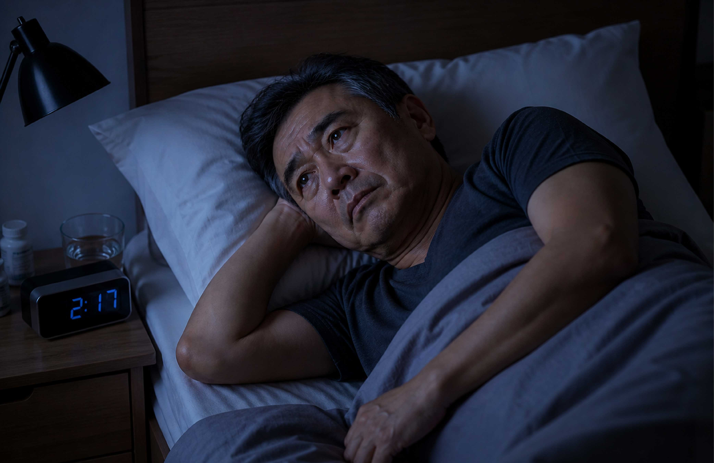
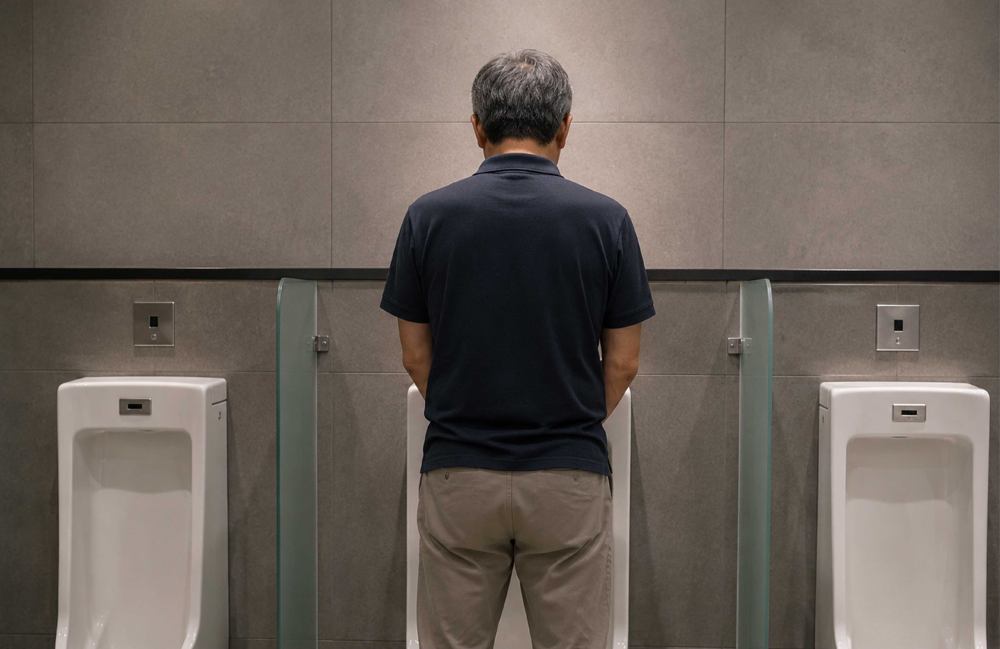
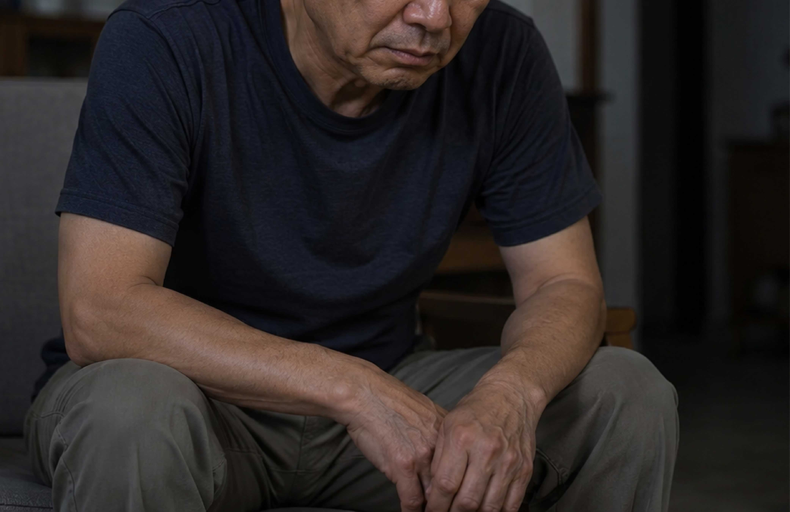
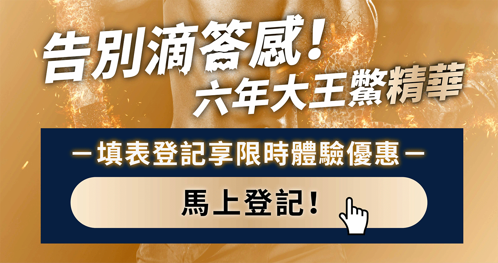
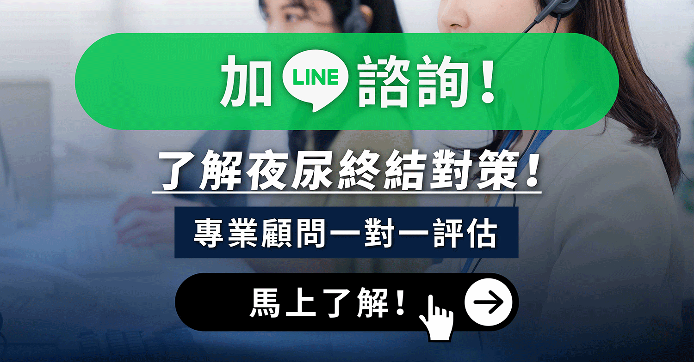
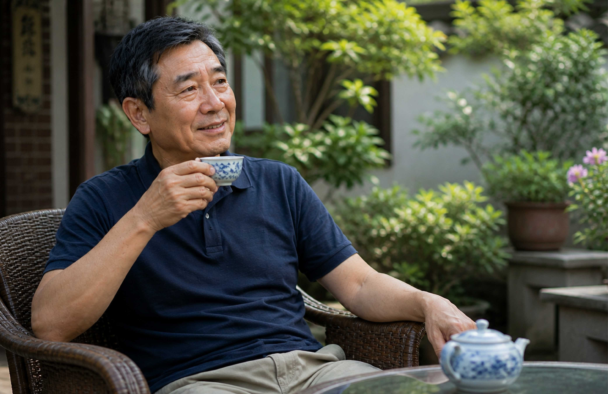

一位退休老師的真實經歷，三個月後重新找回睡眠品質
「我已經不記得，上一次睡超過三個小時，是什麼感覺了。」
這句話，是林先生在診所候診室裡，對著旁邊素昧平生的人說出口的。說完，他自己都愣了一下。一個62歲的退休國小老師，一輩子在台上教學、講課，卻在一個再平常不過的午後，把最難以啟齒的事，輕描淡寫地說給了陌生人聽。

退休後的第一年，林先生過得很愜意，有空就去公園打打太極，下午泡杯茶看看新聞。兒子在台中工作，假日偶爾回來，孫子剛學會走路，每次來家裡都是一陣歡笑。
問題，是從什麼時候開始的？
大概是58歲那年冬天，他注意到自己半夜起來小便的次數變多了，一開始是兩次，他沒在意。「年紀大了嘛，正常的。」老一輩的人這樣說，他也這樣告訴自己。
但慢慢地，兩次變成三次，三次變成四次。

最糟糕的時候，他一個晚上要起來五次。每次站在馬桶前等了好久，卻只流出稀稀落落、細若游絲的一線，滴滴答答，沒完沒了。結束後，還有一種說不清楚的殘尿感，好像膀胱沒有真正排空，尿道口悶悶的，不太舒服。
躺回床上，有時候剛要睡著，尿意又來了，他只好再爬起來，站在馬桶前等，再滴出幾滴。
也因為整晚沒睡好，他白天昏昏沉沉，午餐後常常坐在椅子上就睡著了，但那種睡眠很淺，有一點聲音就會醒，根本不算真正的休息。整個人說不上是哪裡不舒服，但就是提不起勁，體力也一天比一天差。
比起身體的疲累，更讓林先生難受的，是那些「不敢說出口的小事」。
兒子有一次提議，全家去花蓮玩三天兩夜，順便爬爬太魯閣。林先生表面上笑著說「好啊」，卻在心裡盤算著： 火車要搭四個小時，萬一途中尿急、偏偏又站在廁所裡尿不出來怎麼辦？滴滴答答搞半天，門外還有人排隊⋯⋯風景區的步道走到一半，如果突然有尿意怎麼辦？
他沒去。他跟兒子說腳有點不舒服，下次再說。兒子信了，他心裡說不清楚是鬆了一口氣，還是更沉重的失落。

後來有一次，幾個老朋友揪他去打麻將，他坐下來沒多久，就感覺尿意湧上來。他撐著，想說打完這局再去，但那個殘尿感讓他坐立難安，根本無法專心看牌。最後他還是忍不住去了廁所，卻只擠出幾滴稀薄的尿，尿道口悶脹的感覺絲毫沒有緩解。
他開始減少喝水量，睡前兩小時滴水不沾，出門前即便沒有尿意，也要站在馬桶前用力擠一擠，盡量把殘尿逼出來，心裡才踏實一點。
直到有一天，孫子在客廳跑來跑去，他想站起來追，卻發現整個人提不起力氣，只能坐在沙發上看著孫子跑遠。那個瞬間，他決定去看醫生。

去診所之前，林先生在門口站了大概五分鐘。他才62歲，他不想承認。
他是一個在台上講了30年課的人，他習慣的是被人看著、被人聽著，但在這件事上，他卻不知道怎麼開口。
最後他還是鼓起勇氣進去了。醫生說話很和緩，他問了夜裡起來幾次、尿流強不強、有沒有等很久才尿得出來、結束後有沒有滴滴答答或覺得沒尿乾淨的感覺。
醫生很直接地跟他說，這種情況其實在中老年男性很常見。隨著年紀增長，攝護腺會自然出現變化，逐漸壓迫尿道，導致尿流變細、排尿費力。這不是什麼丟臉的事，也不是做錯了什麼才會這樣。
林先生聽完，沉默了一下，問：「那我怎麼辦？」
醫生除了開了藥，也建議林先生可以搭配日常保養一起調整。後來有朋友跟他提到「鱉精」這個東西。
林先生這一代的人，其實對鱉並不陌生。小時候在鄉下，只要有人身體虛、或是開刀後要補，長輩就會燉鱉湯，說是「大補」。只是現在生活型態不同，要買一整隻鱉回來處理，不只麻煩，價錢也不便宜。
但說真的，他一開始其實也沒有全信，只是自己去查了一下。看了一些資料之後，他才慢慢發現，原來這類的補品還有好幾種，有些是傳統延續下來的觀念，有些則是近代才出現的營養搭配。
他那時候大概整理出幾個常被提到的重點元素：
從他小時候就常聽長輩說會拿來補身體，到現在還是很常見的滋補食材。
跟身體循環有關，很多男性保健的資料都有提到這個。
不少人會拿來當日常體力補給，市面上也有很多相關產品。
是人體必需的微量元素之一，在營養學裡本來就佔有一席之地，看很多營養師都說這對男生很好。
像這類脂肪酸，在循環、日常保養相關的資料裡也很常被提到。
「鱉可補癆傷，壯陽氣，大補陰之不足」── 中醫古籍記載
中醫理論中，腎主二便，也就是腎的氣化功能與排尿的順暢有著密切關聯。隨著年齡增長，腎中精氣逐漸虧損，就可能出現尿頻、夜尿、滴不完等困擾。
看完這些之後，他才回頭去看朋友當初提到的那個東西，發現裡面的搭配，其實跟他查到的方向差不多。
那時候他也沒有想太多，只是覺得，既然不是亂補，又比自己東準備一點西準備一點還方便，試試看也無妨。
前兩週，林先生老實說沒有感覺到什麼明顯差異，他提醒自己要有耐心：「這不是藥，是保養，調養身體需要時間。」
大約到了第三週，有天早上醒來，他看了一下手機，發現是早上六點半。昨晚大概十一點睡的，中間有沒有起來？
他想了很久，確認只有一次。凌晨三點左右，他起來排尿，這次尿流比以前順一點，不用站在那裡等半天，收尾也沒有滴滴答答拖很久，殘尿的悶脹感明顯少了很多。回去躺下，他居然很快又睡著了，一直到早上六點半。
再過了一個月，半夜起來的次數慢慢從三四次降到了一次，偶爾兩次。每次排尿的感覺也比以前順暢，不再是那種憋了半天、最後只擠出幾滴的窘境，滴不完的感覺也明顯變少了。
更讓他驚喜的，是整個人的狀態。因為睡眠品質慢慢改善，他白天的精神明顯好多了，以前打太極打到一半就想坐著休息，現在能完整打完一套，還有餘力跟老朋友站在公園聊上半個小時。

退休後的第三年春天，兒子又提起花蓮的計畫。這次，林先生沒有猶豫太久，他覺得現在的狀況跟以前不一樣了。
他說：「去啊，我去。」老婆轉頭看他，有點訝異，然後笑了。
那趟旅行，他們在太魯閣走了將近四個小時。他沒有一直在盤算下一個廁所在哪裡，只是走著，看著，偶爾拉著孫子的小手，告訴他那塊大石頭是怎麼來的。
晚上住在花蓮市區的民宿，他半夜只起來了一次，排尿順暢，沒有拖拖拉拉，回去躺下，五分鐘內又睡著了。
早上七點，他比所有人都早醒，去外面買了早餐，坐在民宿的小庭院裡，泡了杯茶。

林先生的經歷，其實在台灣許多中老年男性身上並不是個案。根據醫學統計，男性在40歲之後攝護腺便開始出現自然的生理變化；到了50歲，約有一半的男性會出現排尿困擾；到了70歲之後，這個比例更高達七成以上。
如果你或身邊的親友有以下狀況，可能就要多加留意：
這些都不是理所當然的老化，也不是只能忍受的宿命。
林先生現在還是每天早起。不是因為睡不著，而是習慣了。他喜歡在太陽剛爬上屋頂那個時刻，泡一壺茶，坐在窗邊，安安靜靜地迎接新的一天。
他說，以前那段日子，最讓他難受的不是身體的不舒服，而是那種無力感，覺得自己的身體不受自己控制，生活的半徑一天天縮小，不得已只能放棄很多事情。
「身體缺的東西就是需要慢慢補回來。你不能期待吃一個禮拜就怎樣，但你有耐心，持續下去，慢慢就會感覺到。」
在日常保養這一塊，找對適合自己的方式，持續而規律地照顧身體，是他覺得最重要的事。